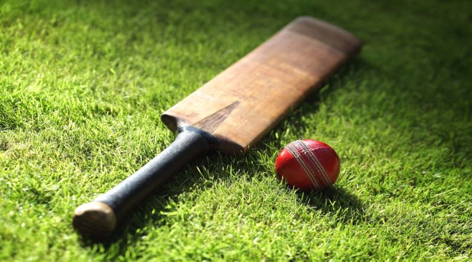
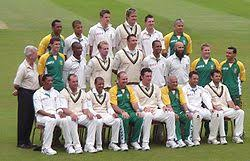
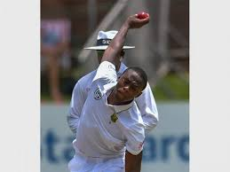
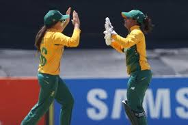
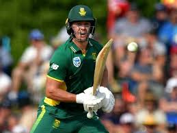
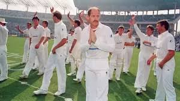
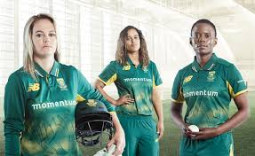
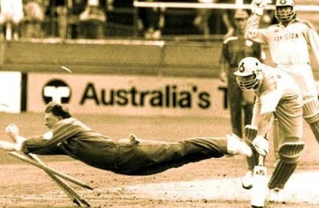
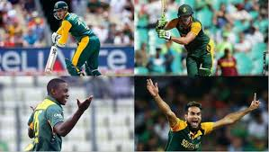

Herschelle Gibbs is the former South African cricketer known to became the first player to hit six consecutive sixes in one over.
Former South African player AB de Villiers won ICC ODI player of the year award 3 times in his carrier

The most whacky rule in cricket states It’s a not out if the ball is caught after it has touched the fielder cap or helmet. On the other hand, if it touches any part of the body and then the player catches it, it is an out.

Leg Before Wicket first appeared in the law of cricket in 1774 as batsman use their body to prevent the ball from hitting their wicket.
Over the years of Change from 1972, the LBW law reformed to this day allowed the batsman to be out in some circumstances when they didn’t attempt to play the ball with their bat.
Mankading is the most controversial rule in cricket. it allows a quick-witted way to run out a non-striker. This happens when a nonstriking batsman moves too far leaving his crease before bowler takes a bowling stride and release the ball. Instead, bowler dislodges the bails on wicket and batsman deems out.
Bowlers Modify the ball behavior by deliberately polishing on one side only to increase the ball swing through the air. However, the act of rubbing ball with other substance than saliva/sweat is an illegal ball tampering.
A white ball is mainly used in limited overs cricket at night for its visibility under flood light.
The best performance by a nonfull member team came when Kenya made to the semifinals of 2003 Cricket World cup tournament.
South Africa was banned from International cricket from 1970 to 1992 as part of Apartheid Boycott.
The Umpire can only declare the Batsman out only if the fielding team appeals, so it doesn’t matter if the batsman is out or not, one should always appeal.
In an attempt to save a six the fielder can jump and stop the ball going over the boundary.
The Current ICC World Cup Trophy was instituted in 1999 which always remains with ICC, a replica awarded to winning team.